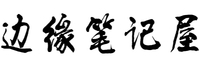

平凡的人，照样可以修修补补。
世界的2001年
1月10日，中国第二艘无人实验飞船神州二号进入太空，16日顺利返回地球。
1月20日，乔治·布什就任第43任美国总统，发表《就职演说》。
2月26日，塔利班领导人颁布灭佛令，12日，摧毁了巴米扬大佛。
9月11日，恐怖分子劫持四架美国航班，其中三架分别撞入世界贸易中心、五角大楼，一架在机上乘客与劫机者搏斗时坠毁。这次袭击造成约3000人死亡，重创美国股市。
我的2001年
这年我念初一，也是第一次接触Web制作，那年有满天飞的个人主页，各种旧时代浏览器的特效，烟花，雨景，跑马灯一样的个人网页，很幸运我能在那个时代成为了他们的一员。为什么建立了这个页面，这里没有什么高大上的教程和感人肺腑的文章，我在这里零碎的记录整理我的生活片段，值得书写的或那些不值得书写的，他们都有可能出现在这里。
随记与文学
经典文学收录：
《滕王阁序》 |
《洛神赋》 |
《小王子》 |
《鬼与狐》 |
《春颂》 |
《根鸟》
《绿山墙的安妮》 |
《夏天的日记》 |
《梦》 |
《初雪》 |
《秋天》 |
《艺文志》
《草房子》
名人合集：
《李白-青莲居士》 |
《杜甫-少陵野老》 |
《李商隐-樊南生》 |
随记：
《War3记录》 |
《接受平庸》 |
《那些年的游戏》 |
《我和她们》 |
笔记屋功能
关于
1.因之前的网站一直处于流浪状态，现已在腾讯云安家，使用新域名mooe.ren并已备案。
2.本站为html手工编写，回归最原始的建站，我在这里记录自己一地鸡毛的生活。
3.站长:只待黎明，如果你细心，就能直接和我对话，你也能在本站《留言本》与我取得联系。